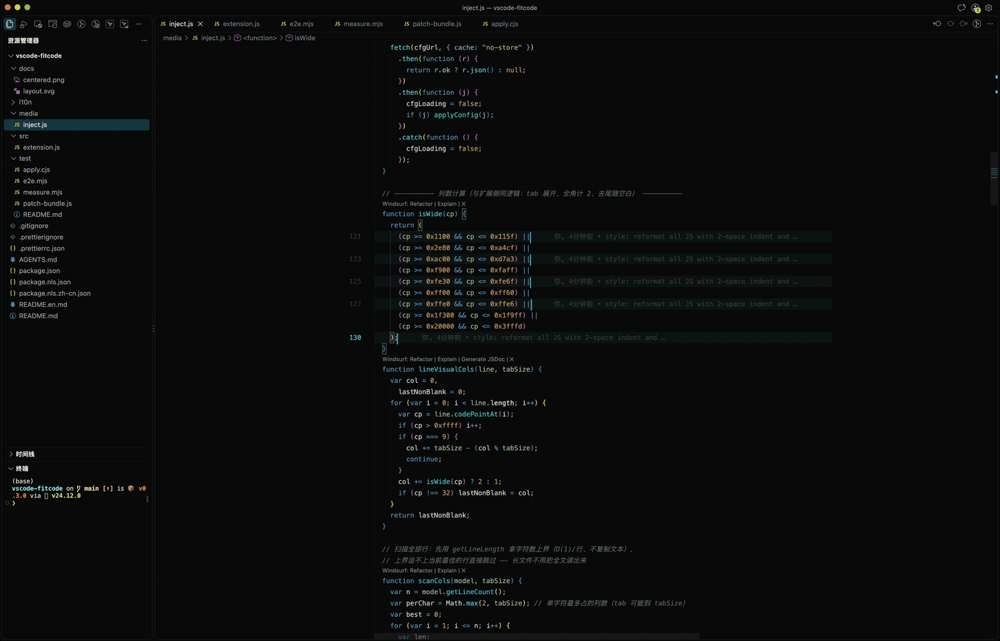
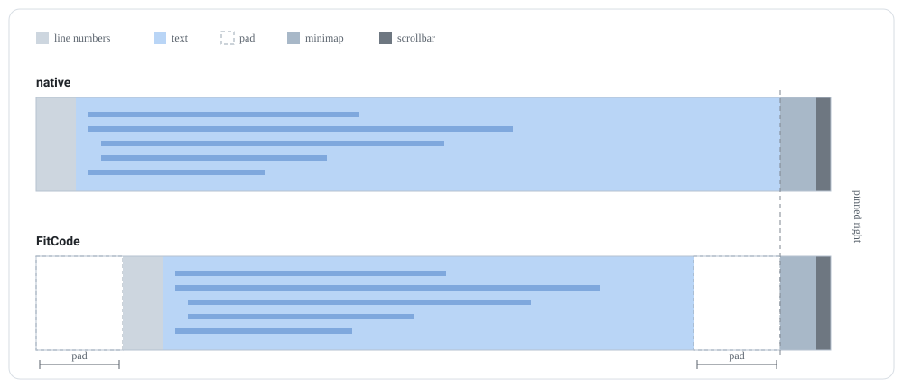

宽度自己找
每个编辑器读自己的文件，量最长那一行（Tab 展开、全角算 2 列、忽略尾随空白）。放得下就居中，放不下就撑满并横向滚动，没有阈值要调。
VS Code 扩展 · v0.1.0 · MIT
编辑器多宽，该由内容说了算。
窄文件居中阅读，宽文件铺满面板。行号跟着正文走，滚动条与 minimap 原地不动。
点 tab 换文件，点右上角切回原生布局。虚线是正文两侧的内缩量 pad——它由最长行算出，没有阈值可配。
默认值就是能用的状态。想改的都在设置里，每一项互不牵连。
每个编辑器读自己的文件，量最长那一行（Tab 展开、全角算 2 列、忽略尾随空白）。放得下就居中，放不下就撑满并横向滚动，没有阈值要调。
宽度是事件驱动的，切 tab 时在绘制前就写好。最长行的结果按文件缓存在 localStorage，重开直接命中。
行号列只亮光标那一行，多光标每处都亮。列宽保留、只改透明度，所以正文不会跟着光标跳。
承载正文的容器只加宽、绝不左移：右边缘照旧贴着编辑器最右，竖滚动条与 overview ruler 原地不动。
每个编辑器组按自己的宽度和内容独立计算，互不干扰——内缩量是每个编辑器自己的 option，不是全局样式。
居中、行号跟随、宽度动画互不依赖。只想要行号跟随？把 fitcode.center 关掉就行，其余照常。
同一窗口依次打开不同宽度的文件：正文宽度跟着最长行走，tab 栏始终满宽，滚动条与 minimap 原地不动。

渲染层算宽度，Monaco 的布局计算读结果。两者之间只有一条通道：编辑器自己的 rulers 选项。

media/inject.js 内联进 workbench.html，对每个编辑器读文档全文，算出最长行的视觉宽度与居中内缩量。
内缩量写进该编辑器自己的 rulers 选项（一条透明、不可见的标尺）当载体——渲染层碰不到布局计算，这是唯一能安全传出去的通道。
Monaco 的 computeLayout 读 rulers，把内缩量加到 glyphMargin / 行号 / 装饰 / contentLeft，
contentWidth 减 2×pad；EditorScrollbar._setLayout 再把正文容器加宽 pad。
四处补丁都带唯一性断言，锚点失配就放弃打补丁，绝不猜着改；原文件在打补丁前自动备份为
.fitcode.bak，禁用时原样还原。
还没上架扩展市场。克隆下来放进扩展目录，执行一次启用命令，全部可逆。
git clone https://github.com/Feudalman/vscode-fitcode.git
cp -r vscode-fitcode ~/.vscode/extensions/local.fitcode-0.1.0
命令面板（Cmd/Ctrl + Shift + P）执行
FitCode: 启用，按提示重载窗口。
打开窄文件会居中，宽文件自动撑满。改设置 1~2 秒生效，不用重新启用，也不用重载窗口。
AI
原样发给 Claude Code、Codex 这类能执行命令的 AI，它会自己克隆、装进扩展目录、打好补丁。装完你只需要重载一次窗口。
帮我装一下 FitCode 这个 VS Code 扩展，它让编辑器的正文宽度跟着内容走。
1. 把 https://github.com/Feudalman/vscode-fitcode.git 克隆到临时目录
2. 在仓库里执行 node test/apply.cjs install，把扩展同步进 ~/.vscode/extensions/
3. 再执行 node test/apply.cjs enable，给 VS Code 安装目录打补丁
4. 执行 node test/apply.cjs status，确认补丁已经打上
5. 最后提醒我重载一次 VS Code 窗口
几点注意：
- enable 会改 VS Code 安装目录里的 workbench.desktop.main.js 和 workbench.html，改之前自动备份，禁用时原样还原
- 找不到 VS Code 安装目录就先问我，别猜路径
- 除了扩展目录和 VS Code 安装目录，别动我其它文件启用后生效，改完 1~2 秒刷新，不用重载窗口。
| 设置 | 默认值 | 作用 | 关掉居中后 |
|---|
{ "fitcode.center": false }{ "fitcode.lineNumbersOnlyAtCursor": false }{ "fitcode.animate": false }
渲染层拿不到 VS Code 的设置 API，所以扩展把设置写进
out/vs/workbench/fitcode.config.json（启用时创建、禁用时删除），渲染层每 2 秒以及窗口聚焦时拉一次。
这些边界是设计的一部分，不是待修的 bug。
editor.wordWrap 的文件不居中——自动换行模式下居中无意义。